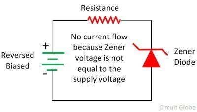

Zener Diode
A heavily doped semiconductor diode which is designed to operate in reverse direction is known as the Zener diode. In other words, the diode which is specially designed for optimising the breakdown region is known as the Zener diode.

Zener Diode Circuit Diagram
The circuit diagram of the Zener diode is shown in the figure below. The Zener diode is employed in reverse biasing. The reverse biasing means the n-type material of the diode is connected to the positive terminal of the supply and the P-type material is connected to the negative terminal of the supply. The depletion region of the diode is very thin because it is made of the heavily doped semiconductor material.
Working of Zener Diode
The Zener diode is made up of heavily doped semiconductor material. The heavily doped means the high-level impurities is added to the material for making it more conductive. The depletion region of the Zener diode is very thin because of the impurities. The heavily doping material increases the intensity of the electric field across the depletion region of the Zener diode even for the small reverse voltage.
When no biasing is applied across the Zener diode, the electrons remains in the valence band of the p-type material and no current flow through the diode. The band in which the valence electrons (outermost orbit electron) place is known as the valence band electron. The electrons of the valence band easily move from one band to another when the external energy is applied across it.
When the reverse bias applies across the diode and the supply voltage is equal to the Zener voltage then it starts conducting in the reverse bias direction. The Zener voltage is the voltage at which the depletion region completely vanish.
The reverse bias applies across the diode increases the intensity of electric field across the depletion region. Thus, it allows the electrons to move from the valence band of P-type material to the conduction band of N-type material. This transferring of valence band electrons to the conduction band reduces the barrier between the p and n-type material. When the depletion region become completely vanish the diode starts conducting in the reverse biased.
Characteristic of Zener Diode
The VI characteristic graph of the Zener diode is shown in the figure below. This curve shows that the Zener diode, when connected in forwarding bias, behaves like an ordinary diode. But when the reverse voltage applies across it and the reverse voltage rises beyond the predetermined rating, the Zener breakdown occurs in the diode.
At Zener breakdown voltage the current starts flowing in the reverse direction. The graph of the Zener breakdown is not exactly vertical shown above which shows that the Zener diode has resistance. The voltage across the Zener is represented by the equation shown below.
V = VZ + IZRZ
Applications of Zener Diode
The Zener diode is mostly used in the commercial and industrial applications. The following are the main application of the Zener diode.
As Voltage Stabilizer - The Zener diode is used for regulating the voltage. It provides the constant voltage from the fluctuating voltage source to the load. The Zener diode is connected in parallel across the load and maintain the constant voltage VZ and hence stabilises the voltage.
For Meter Protection - The Zener diode is generally used in multimeters for controlling the movement of the meter against accidental overloads. It is connected in parallel with the diode. When the overload occurs across the diode most of the current pass through the diode. Thus, protects the meter from damage.
For Wave Shaping - The Zener diode is used for converting the sine wave into the square wave.This can be done by placing the two Zener Diodes in series with the resistance. The diode is connected back to back and in the opposite direction.
Light Emitting Diode
The lighting emitting diode is a p-n junction diode. It is a specially doped diode and made up of a special type of semiconductors. When the light emits in the forward biased, then it is called a light-emitting diode.
Light Emitting Diode
The LED symbol is similar to a diode symbol except for two small arrows that specify the emission of light, thus it is called LED (light-emitting diode). The LED includes two terminals namely anode (+) and the cathode (-). The LED symbol is shown below.
LED Symbol
Construction of LED
The construction of LED is very simple because it is designed through the deposition of three semiconductor material layers over a substrate. These three layers are arranged one by one where the top region is a P-type region, the middle region is active and finally, the bottom region is N-type. The three regions of semiconductor material can be observed in the construction. In the construction, the P-type region includes the holes; the N-type region includes elections whereas the active region includes both holes and electrons.
When the voltage is not applied to the LED, then there is no flow of electrons and holes so they are stable. Once the voltage is applied then the LED will forward biased, so the electrons in the N-region and holes from P-region will move to the active region. This region is also known as the depletion region. Because the charge carriers like holes include a positive charge whereas electrons have a negative charge so the light can be generated through the recombination of polarity charges.
How does the Light Emitting Diode Work?
The light-emitting diode simply, we know as a diode. When the diode is forward biased, then the electrons & holes are moving fast across the junction and they are combined constantly, removing one another out. Soon after the electrons are moving from the n-type to the p-type silicon, it combines with the holes, then it disappears. Hence it makes the complete atom & more stable and it gives the little burst of energy in the form of a tiny packet or photon of light.
Working of Light Emitting Diode
The above diagram shows how the light-emitting diode works and the step by step process of the diagram.
From the above diagram, we can observe that the N-type silicon is in red color including the electrons which are indicated by the black circles. The P-type silicon is in the blue color and it contains holes, they are indicated by the white circles. The power supply across the p-n junction makes the diode forward biased and pushing the electrons from n-type to p-type. Pushing the holes in the opposite direction. Electron and holes at the junction are combined. The photons are given off as the electrons and holes are recombined.
Photo Diode
A photodiode is a PN-junction diode that consumes light energy to produce an electric current. They are also called a photo-detector, a light detector, and a photo-sensor. Photodiodes are designed to work in reverse bias condition. Typical photodiode materials are Silicon, Germanium and Indium gallium arsenide.
Photo Diode Symbol
Working Of Photodiode
The working principle of a photodiode is, when a photon of ample energy strikes the diode, it makes a couple of an electron-hole. This mechanism is also called the inner photoelectric effect. If the absorption arises in the depletion region junction, then the carriers are removed from the junction by the inbuilt electric field of the depletion region.

Therefore, holes in the region move toward the anode, and electrons move toward the cathode, and a photocurrent will be generated. The entire current through the diode is the sum of the absence of light and the photocurrent. So the absent current must be reduced to maximize the sensitivity of the device.